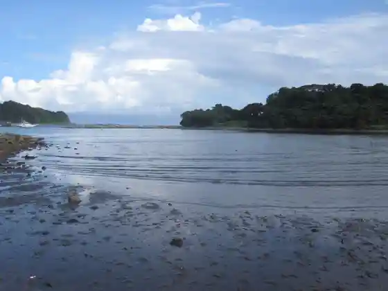
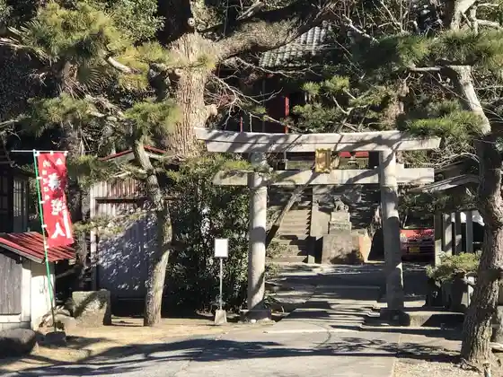
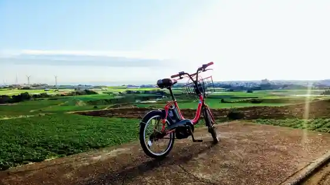
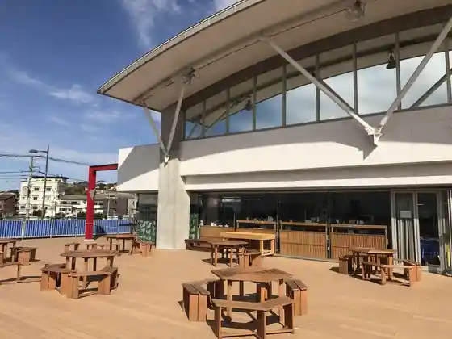

Ko Na Wan no Higata
Miura, Kanagawa · Official / source link

Shirogashima Lighthouse
Miura, Kanagawa · 046-881-6640 · Official / source link
Shirahige Shrine
Miura, Kanagawa · 046-881-7676 · Official / source link

Shirogashima Saikuringu (Miura Rentasaikuru)
Miura, Kanagawa · 046-888-0588 · Official / source link

Urari Marushie Sakana Kan Yasai Kan
Miura, Kanagawa · 046-881-6721 · Official / source link

Koami Dai Forest
Miura, Kanagawa · 045-210-4310 · Official / source link
Suichu Kankosen (Nijiirosakana Go)
Miura, Kanagawa · 046-881-6721 · Official / source link
Miyagawa Park
Miura, Kanagawa · 046-888-0588 · Official / source link
Misaki Shita Town Shopping Street
Miura, Kanagawa · Official / source link
Miura Rentasaikuru
Miura, Kanagawa · Official / source link
Kainan Shrine
Miura, Kanagawa · 046-881-3038 · Official / source link
Arai Hama Beach
Miura, Kanagawa · 046-881-2738 · Official / source link
Tsurugi Saki Lighthouse
Miura, Kanagawa · 046-861-8374 · Official / source link
Tsuri Fune Maru Ju Maru
Miura, Kanagawa · 046-881-0100 · Official / source link
Hon Zui Tera
Miura, Kanagawa · Official / source link
Misaki Asa City
Miura, Kanagawa · Official / source link
Kanagawa Prefectural Shirogashima Park
Miura, Kanagawa · 046-881-6640 · Official / source link
Kanagawaken Gyogyo Kyodokumiai Rengokai Maguro Chokuhan Center
Miura, Kanagawa · 046-881-0872 · Official / source link
Miura Misaki Suisambutsu Chiho Oroshiuri Market (Misaki Sakana Market)
Miura, Kanagawa · 046-882-1111 · Official / source link
Chakkirako Misaki Showa Kan
Miura, Kanagawa · 046-881-6721 · Official / source link
Aburatsubo Keikyu Mariina
Miura, Kanagawa · 046-882-2720 · Official / source link
E no Ki Terasu
Miura, Kanagawa · Official / source link
Do Ami Coast
Miura, Kanagawa · Official / source link
Awa Saki Lighthouse
Miura, Kanagawa · Official / source link
Shirogashima Kaijo Igasu Tsuribori (J's Fishing)
Miura, Kanagawa · 046-854-9891 · Official / source link
Koajiro Shiiboniamariina Umi no Eki
Miura, Kanagawa · 046-882-1212 · Official / source link
Miura Coast Beach (MIURA FUN BEACH Miura Coast)
Miura, Kanagawa · 046-888-0588 · Official / source link
Hosutorekkingu Farm Miura Coast
Miura, Kanagawa · 046-887-1088 · Official / source link
Nagatsu Ro no Iso
Miura, Kanagawa · Official / source link
Uma no Se Domon
Miura, Kanagawa · 046-888-0588 · Official / source link
Umiu Lookout
Miura, Kanagawa · 046-888-0588 · Official / source link
Kanagawaken Suisan Gijutsu Center
Miura, Kanagawa · 046-882-2312 · Official / source link
KEIKYU OPEN TOP BUS MIURA
Miura, Kanagawa · 045-225-9696 · Official / source link
Misakiko Tosen (Sanshiro)
Miura, Kanagawa · 046-881-0533 · Official / source link
Misaki Fishing Port
Miura, Kanagawa · Official / source link
nana parfait
Miura, Kanagawa · 046-874-9364 · Official / source link
Shirogashima Haikingukosu
Miura, Kanagawa · 046-888-0588 · Official / source link
Miura Buruwarii
Miura, Kanagawa · 046-876-8095 · Official / source link
Jizakana Ryori Matsuwa
Miura, Kanagawa · 046-886-1767 · Official / source link
Maguro Shokudo Shichibyoe Maru
Miura, Kanagawa · 046-882-6669 · Official / source link
Waju
Miura, Kanagawa · 046-897-3925 · Official / source link
Kaigai Town no Suranpu Kozo
Miura, Kanagawa · 046-888-0588 · Official / source link
Maruichi Shokudo
Miura, Kanagawa · 046-881-2488 · Official / source link
Misakimaguro Kurabu
Miura, Kanagawa · 046-882-6390 · Official / source link
Ishii Shoten
Miura, Kanagawa · 046-881-4835 · Official / source link
Aki Ha Miura Demikan Kari
Miura, Kanagawa · Official / source link
SevenSeas
Miura, Kanagawa · 046-890-6051 · Official / source link
Maguro no Warayaki Ya
Miura, Kanagawa · 046-854-7444 · Official / source link
Kaneme Tai Senmonten Kokai
Miura, Kanagawa · 046-887-0662 · Official / source link
Wada Beach
Miura, Kanagawa · 046-881-2738 · Official / source link
Nusubito Kari
Miura, Kanagawa · Official / source link
Miura Coast Sakura Festival
Miura, Kanagawa · Official / source link
Shirogashima Daibingu Center
Miura, Kanagawa · 046-882-0700 · Official / source link
Kissa to Zakka Suzume Ie
Miura, Kanagawa · Official / source link
Kaneme Tai Senmonten Kokai
Miura, Kanagawa · 046-874-5258 · Official / source link
Kafe Plaza Diokoria
Miura, Kanagawa · 050-1725-5568 · Official / source link